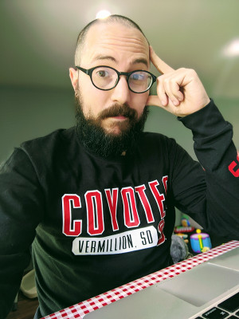

Prof. Pere Miró

About Me
Theoretical/Computational physical chemist born in Vendrell (Spain) who got his Ph.D. at the Institute of Chemical Research of Catalonia and travelled the world until he became an assistant professor in South Dakota.
Education
- Ph.D., Computational Chemistry, Universitat Rovira i Virgili / Institute of Chemical Research of Catalonia (2005–2010)
- M.S., Computational Chemistry, Universitat Rovira i Virgili / Institute of Chemical Research of Catalonia (2005–2006)
- B.S., Chemistry, Universitat Rovira i Virgili (2000–2005)
Previous Appointments
- Assistant Professor, Department of Chemistry, University of North Florida (2016–2017)
- Postdoctoral Fellow, Snurr Group, Department of Chemical Engineering, Northwestern University (2015–2016)
- Postdoctoral Fellow, Heine Group, Department of Physics, Jacobs Univerisity, Bremen (2012–2015)
- Postdoctoral Fellow, Cramer Group, Department of Chemistry, University of Minnesota (2010–2012)